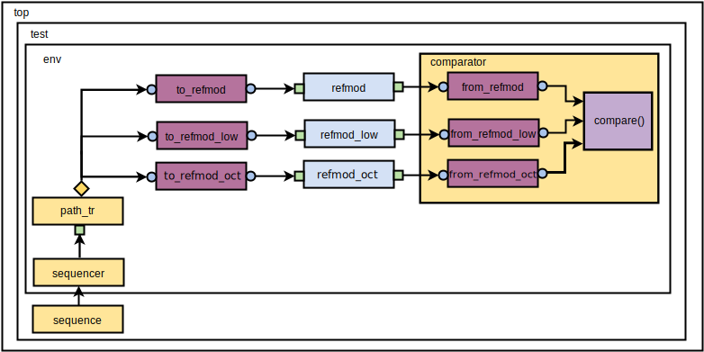

Octave is a software that provides a high-level programming language for numerical computation. Its syntax is quite similar to MATLAB and their scripts are compatible to run in both MATALB and Octave.
When there is a need to verify complex RTL with expensive numerical computations and reduce the time to market, Octave may be integrated into SystemC and UVM, providing vast libraries for Digital Signal Processing, Statistics, Communcation, etc [1].
In the previous post about UVM Connect, was shown how to verify a SystemC reference model with another reference model also in SystemC. Suppose now that we want to check our reference model with two other models (a SystemC model already present in the previous UVM Testbench and a reference model written in Octave). The testbench of this sctructure can be seen in Figure 1.
 Figure 1 - A simple testbench with three refmods{kind=link}
{kind=link}
The operation of refmods is quite simple: it only throws in the output a string that comes from the input. Note that the refmod_oct is written in SystemC but it calls a function reffunc.m written in Octave as illustrated in Figure 2.
Figure 2 - Octave function called in a SystemC module{kind=link}
The codes of the refmod_oct.cpp and reffunc.m can be seen below. Note that the headers systemc.h and tlm.h were not included because this was done in the refmod.cpp.
#include <octave/oct.h> #include <octave/octave.h> #include <octave/parse.h> #include <octave/toplev.h> SC_MODULE(refmod_oct) { sc_port<tlm_get_peek_if<tr> > in; sc_port<tlm_put_if<tr> > out; void p() { string_vector oct_argv (2); oct_argv(0) = "embedded"; oct_argv(1) = "-q"; octave_function *oct_fcn; octave_value_list oct_in, oct_out; oct_fcn = load_fcn_from_file("reffunc.m"); if(oct_fcn) cout << "Info: SystemC: Octave function loaded." << endl; else sc_stop(); tr tr; while(1){ tr = in->get(); octave_idx_type i = 0; oct_in(i) = octave_value (tr.message); oct_out = feval(oct_fcn, oct_in); tr.message = oct_out(0).string_value (); cout <<"refmod_oct: " <<tr.message <<"\n"; out->put(tr); } } SC_CTOR(refmod_oct): in("in"), out("out") { SC_THREAD(p); } };
function f = reffunc(a) f = a; end
The codes of the environment (env.sv), where the connections of the modules are present can be seen below.
`include "comparator.sv" class env extends uvm_env; sequencer sqr; path_tr path; comparator #(packet_out) comp; uvm_tlm_analysis_fifo #(packet_in) to_refmod; uvm_tlm_analysis_fifo #(packet_in) to_refmod_low; uvm_tlm_analysis_fifo #(packet_in) to_refmod_oct; `uvm_component_utils(env) function new(string name, uvm_component parent = null); super.new(name, parent); to_refmod = new("to_refmod", this); to_refmod_low = new("to_refmod_low", this); to_refmod_oct = new("to_refmod_oct", this); endfunction virtual function void build_phase(uvm_phase phase); super.build_phase(phase); sqr = sequencer::type_id::create("sqr", this); path = path_tr::type_id::create("path", this); comp = comparator #(packet_out)::type_id::create("comp", this); endfunction virtual function void connect_phase(uvm_phase phase); path.seq_item_port.connect(sqr.seq_item_export); path.item_collected_port.connect(to_refmod.analysis_export); uvmc_tlm1 #(packet_in)::connect(to_refmod.get_export, "refmod_i.in"); path.item_collected_port.connect(to_refmod_low.analysis_export); uvmc_tlm1 #(packet_in)::connect(to_refmod_low.get_export, "refmod_low_i.in"); path.item_collected_port.connect(to_refmod_oct.analysis_export); uvmc_tlm1 #(packet_in)::connect(to_refmod_oct.get_export, "refmod_oct_i.in"); endfunction virtual function void end_of_elaboration_phase(uvm_phase phase); super.end_of_elaboration_phase(phase); endfunction endclass
The comparator class compares the transactions coming from the refmod with the refmod_low and refmod_oct transactions and its SystemVerilog code can be seen below.
class comparator #(type T = packet_in) extends uvm_scoreboard; typedef comparator #(T) this_type; `uvm_component_utils(this_type) uvm_tlm_fifo #(T) from_refmod; uvm_tlm_fifo#(T) from_refmod_low; uvm_tlm_fifo#(T) from_refmod_oct; T tr1, tr2, tr3; int match, mismatch; function new(string name, uvm_component parent); super.new(name, parent); from_refmod = new("from_refmod", null, 1); from_refmod_low = new("from_refmod_low", null, 1); from_refmod_oct = new("from_refmod_oct", null, 1); tr1 = new("tr1"); tr2 = new("tr2"); tr3 = new("tr3"); endfunction function void connect_phase(uvm_phase phase); uvmc_tlm1 #(T)::connect(from_refmod.put_export, "refmod_i.out"); uvmc_tlm1#(T)::connect(from_refmod_low.put_export, "refmod_low_i.out"); uvmc_tlm1#(T)::connect(from_refmod_oct.put_export, "refmod_oct_i.out"); endfunction: connect_phase task run_phase(uvm_phase phase); forever begin from_refmod.get(tr1); from_refmod_low.get(tr2); from_refmod_oct.get(tr3); compare(); end endtask: run_phase virtual function void compare(); if(tr1.message == tr2.message && tr1.message == tr3.message) begin $display("Comparator MATCH with 2 refmods (refmod == refmod_low == refmod_oct)"); match++; end else if(tr1.message == tr2.message) begin $display("Comparator MATCH with refmod_low (refmod == refmod_low)"); match++; end else if(tr1.message == tr3.message) begin $display("Comparator MATCH with refmod_oct (refmod == refmod_oct)"); match++; end else begin $display("Comparator MISMATCH"); mismatch++; end endfunction: compare endclass: comparator
You can clone or download the full repository ot this testbench with a Makefile for Synopsys tools in GitHub.
References
[1] How to Connect SystemVerilog with Octave. http://www.amiq.com/consulting/2014/11/21/how-to-connect-systemverilog-with-octave/